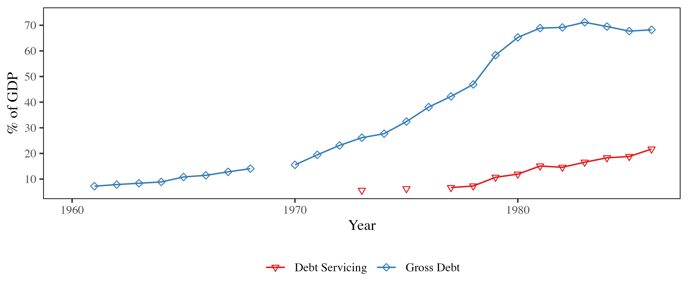

{{< pagebreak >}}
The early 1990s marked a pivotal moment in world history, famously described as the „end of history“ by political theorist Francis Fukuyama [@fukuyamaEndHistory1989]. With the collapse of the Soviet Union and the widespread adoption of liberal capitalism, it seemed as though Western democratic capitalism had triumphed as the ultimate and unchallenged form of socio-economic organization. Amidst this global shift, socialism—the greatest socio-political experiment of the 20th century—appeared to be consigned to the past, discredited and dismantled across much of the globe.
Yet, the story of socialism’s demise is not a simple tale of ideological failure; it is intertwined with complex internal and external dynamics. Among the various socialist models, Yugoslav socialism stood out for its unique blend of market mechanisms and worker self-management, presenting an alternative vision of socialism that diverged from the centralized planning of the Soviet model. However, by the 1980s, this once-promising system found itself in deep crisis, ultimately unraveling in the face of political and economic challenges.
This essay argues that the collapse of Yugoslav market socialism was driven by external factors, not internal inefficiencies or ideological failure. It highlights the decisive role of geopolitical pressures and global economic forces in dismantling this unique socialist model in the years leading up to 1990. These dynamics, more than any inherent flaws, dismantled a socialist model that had successfully combined market mechanisms with worker self-management for decades. I will focus less on the complex dissolution of the Yugoslav state in the 1990s and more on the end of the socialist model, marked by the introduction of the economic Reforms in 1989.
The first section provides a brief overview of Yugoslavia’s economic history, setting the stage for an analysis of existing explanations for its collapse. Following this, the essay examines four major external shocks that significantly impacted the Yugoslav economy: beginning with the Oil Shock of the 1970s, it then explores the global economic downturn, the escalation of external debt, ebbing of immigration, and concludes with an analysis of the IMF Adjustment Programs.
Economic History of Yugoslavia#
After World War II, the Communist Party of Yugoslavia rose to power under the leadership of Josip Broz Tito, who became the country’s first president. Initially, Yugoslavia adopted a Soviet-style centrally planned economy, prioritizing heavy industrialization. However, following a decisive split between Tito and Stalin in 1948, Yugoslavia began to forge its own distinctive path, developing a unique form of socialism. This shift was marked by a move away from the Soviet bloc and towards a prominent leadership role within the Non-Aligned Movement.
The following period until the start of the 1980s was defined by rapid growth in Yugoslavia. For a time, it was one of the fastest growing economies [@sapirEconomicGrowthFactor1980] and praised by contemporaries as a „third way“, combining capitalism and socialism.
The Yugoslav economic system was defined by the central role of workers‘ self-management, in which workers effectively owned the firms. A significant portion of decision-making occurred within workers‘ councils, which had the authority to hire and fire managers and determine how profits were distributed between investment and wages.
Unlike other socialist economies, Yugoslavia maintained a relatively open stance towards both Eastern and Western trade. As a member of the General Agreement on Tariffs and Trade (GATT), it engaged extensively in international trade, particularly from the 1960s onwards. Yugoslavia’s imports and exports were notably diversified, spanning a wide range of trading partners and products, and it had a higher share of trade with OECD countries than the socialist bloc [@kukicOriginsRegionalDivergence2020, p. 4].
Existing Explanations#
A variety of theories seek to explain the disintegration of the Socialist Federal Republic of Yugoslavia (SFY). @jovicDisintegrationYugoslaviaCritical2001 outlines seven distinct arguments, including economic, cultural, nationalist, and international political factors. My argument straddles the economic and international political explanations, with a primary focus on the collapse of the economic system rather than the disintegration of the state itself.
@yarashevichEconomicReasonsBreakYugoslavia2013 explore the economic reasons behind the breakup of Yugoslavia, identifying four key factors. These include two internal issues—labor market challenges and the system of self-management—as well as two external pressures—external debt and foreign trade dynamics.
Additional economic factors are highlighted by @kukicOriginsRegionalDivergence2020, who examines the regional economic divergence within Yugoslavia. He argues that the failure of the regions to converge economically can be attributed to the soft-budget constraint and the inherent flaws of the workers‘ self-management system.
While all these explanations offer valid insights, the collapse of a system as complex as Yugoslavia’s can never be attributed to a single cause. However, arguments that focus solely on internal economic inefficiencies fall short of explaining why other, similarly diverse countries experienced comparable trajectories in the 1980s. Despite their different political and economic systems, these countries exhibited strikingly similar patterns of decline (@fig-gdp), suggesting that broader external factors played a critical role beyond internal dynamics.
{#fig-gdp}
In the following sections, I will outline the key external shocks and their overlapping effects that may explain the similar trajectories taken by many countries during this period. These factors are crucial in understanding why external forces, rather than internal inefficiencies alone, are to blame for the collapse of Yugoslavia’s economic system.
Data#
Economic data series for Yugoslavia are notoriously difficult to obtain and often unreliable. Official growth data for the Social Product, Yugoslavia’s equivalent to GDP, are particularly problematic due to price distortions and data fabrication. Therefore, this analysis relies on alternative time series from the Maddison Project Database [@boltMaddisonProjectDatabase2024], which in turn draws on the independent research conducted by the Research Project on National Income in East Central Europe.
Many of the additional data sources used throughout this analysis are drawn from the OECD Economic Surveys [@OECDEconomicSurveys]. These biannual surveys, conducted from 1962 to 1990, provide standardized tables on various economic indicators, including foreign trade, debt, balance of payments, and the federal budget, among others. Some of the data in these reports were sourced directly from Yugoslavia’s Official Statistics Office, while other figures were calculated by OECD researchers. Data from these digitized reports used here has been extracted using OCR (Optical Character Recognition) technology, then transformed into time-series data for further combination and analysis.
The Effect of the Oil Shocks#
The oil shocks of 1973 and 1979 marked a turning point in the global economy, as sudden and dramatic increases in oil prices sent shockwaves through oil-dependent nations worldwide. These crises saw global oil prices nearly triple, rising by almost 300%, and profoundly disrupted the economic stability of many countries. For Yugoslavia—a nation without domestic oil production and heavily reliant on imported energy—these shocks presented a formidable challenge that would strain its economic model.
During this period, the impact on Yugoslavia’s economy was stark: the share of energy imports in total imports surged from about 5% in the 1960s to nearly 30% by the early 1980s (see @fig-imports2). Similarly, energy imports as a share of GDP rose sharply, climbing from roughly 1% in the 1960s to almost 15% at the beginning of the 1980s, as visible in @fig-imports1. These shifts underscored the country’s growing vulnerability to external economic forces and contributed to the mounting pressures on its socialist economy.
{#fig-imports1}
{#fig-imports2}
The Impact of Rising Energy Prices on Imports
Even for advanced Western nations like Germany, the two oil shocks triggered significant crises. However, for a less developed country like Yugoslavia, whose currency was weaker on international markets, affording these costly imports became nearly impossible. As @rogelBreakupYugoslaviaIts2004 explains, „for a country like Yugoslavia, which was greatly dependent on imported fuel paid for in hard currency, the oil price crisis alone could have resulted in financial ruin“ (p. 14).
Global Economic Downturn#
To cope with rising import prices, a country typically has three options: reduce imports, increase exports, or offset the costs through capital account inflows. Yugoslavia, however, found it difficult to significantly cut imports, despite implementing various policies and imposing substantial reductions in energy access. For an industrialized economy, energy is the backbone, and reducing its consumption without causing serious economic disruption is rarely feasible. The dramatic surge in prices made it nearly impossible to offset these costs through reductions alone, leaving the country vulnerable to external pressures and a negative trade balance.
The second option—boosting exports—proved only partially successful and fell far short of generating the necessary hard currency. Yugoslavia’s main trading partners, the members of the European Economic Community (EEC), were grappling with their own macroeconomic challenges. The stagflation of the 1970s, characterized by low growth and high inflation, sharply reduced demand for foreign products, particularly for Yugoslavia’s key export category: finished manufactures. As a result, the external market for Yugoslav goods shrank, further exacerbating the country’s economic difficulties.
Immigration Restrictions#
Furthermore, countries that had previously been significant destinations for Yugoslav emigrants, such as Germany and France, enacted restrictive policies regarding economic migrants. Germany, in particular, terminated its „Anwerbeabkommen“ (recruitment agreement) in 1973, in the wake of the initial oil shock. Furthermore, it augmented its immigration regulations in 1979, following the second oil shock. This shift made it increasingly challenging for Yugoslav workers to secure employment abroad, consequently leading to a reduction in the flow of remittances, which constituted a crucial source of hard currency for the Yugoslav economy.
Consequently, the number of emigrants declined markedly, resulting in a net negative migration trend in Yugoslavia. In the 1970s, a record 230,000 individuals emigrated from the country. However, by the following decade, this figure had declined to just 30,000, and it continued to decrease over time, as illustrated by the data presented in @fig-migrants.
 {#fig-migrants}
{#fig-migrants}
As a result, remittances from foreign workers fell significantly, exacerbating the capital account issues faced by Yugoslavia. This problem became particularly acute in the 1980s due to the delayed impact of the policy changes. In both absolute and relative terms, remittances declined significantly, especially after 1981 (see @fig-remittances). This decline in remittances further compounded the economic challenges facing the country, straining its financial stability.


Importance of Remittances for Yugoslavia
External Debt#
In order to address the growing current account deficit that it was experiencing in the 1970s, Yugoslavia sought assistance from Western lenders. In pursuit of promising investment prospects beyond their flagging domestic markets, Western capitalists were amenable to investing in nascent markets such as Yugoslavia [@babicCausesGrowthYugoslav1986]. It is estimated that these lenders covered approximately 90% of Yugoslavia’s current account deficit up to 1975 with their loans [@yarashevichEconomicReasonsBreakYugoslavia2013].
This dependence on Western capital subsequently became a significant liability, particularly in the 1980s. The second oil shock precipitated inflationary pressures in the West, particularly in the United States, where the Federal Reserve responded by raising interest rates to as high as 20% in 1981 (known as the „Volcker shock“). The soaring interest rates had a particularly pronounced impact on emerging economies, including Yugoslavia. As a result, they were compelled to pay a considerable premium to finance their debt, while also facing mounting costs associated with its servicing.
The advent of the Mexican debt crisis in 1982 precipitated a rapid and widespread contraction in the availability of foreign credit for numerous countries. Foreign lenders promptly retreated from emerging markets, seeking safer investments such as US Treasury bonds. During this period, „Yugoslavia completely lost its access to international financial markets“ [@mojmirFormerYugoslaviasDebt1996]. This forced the government to seek alternative sources of funding for essential imports, including energy resources that were vital for maintaining the country’s economy.
A significant burden on the economy was the debt servicing payments, which reached 10% of GDP in 1980 and a record of 21.7% in 1986. For any country, such substantial debt payments would represent a significant challenge. However, for Yugoslavia, which was already experiencing a range of economic difficulties, this situation became particularly problematic.

The Role of the IMF#
In the context of multiple crises, many of which were precipitated by the 1979 oil shock, Yugoslavia was compelled to seek assistance from the West. The balance of payments crisis had reached a point where it could no longer be managed without external assistance.
This situation presented a prime opportunity for the International Monetary Fund (IMF), which was originally established to manage balance of payments crises as a global lender of last resort. The IMF offers two primary avenues of assistance to countries facing short-term liquidity challenges. The first is direct lending, providing short- to medium-term loans to address a shortage of hard currencies. The second is the provision of a „seal of approval,“ indicating that a country is on a trajectory towards a more sustainable financial position, thereby enabling private lenders to resume debt or lending activities [@jensenCrisisConditionsCapital2004].
The IMF Prescription#
In order to reach an agreement with the International Monetary Fund (IMF), the country in crisis must implement a program of policies that have been negotiated in secrecy and are designed to address the underlying macroeconomic issues. During the 1980s, the IMF expanded its role beyond that of mere stabilization to become a leading advocate for market-focused reforms. As the „world’s leading promoter of market-liberalizing reforms“ [@kentikelenisMakingNeoliberalGlobalization2019], the IMF began to advocate for a more expansive program of economic liberalization and structural adjustments in countries experiencing financial crises.
The International Monetary Fund (IMF) frequently employs a standard procedure to address underlying balance of payments crises. This procedure typically involves reducing aggregate demand, primarily through fiscal cuts, while simultaneously encouraging capital inflows by increasing foreign direct investment (FDI), leading to a more symmetric trade balance. Foreign investors need to be convinced of the profitability of their investment through favorable conditions, such as low wages and a conducive business environment, created indirectly or directly by the IMF programs.
In practice, the effect of these policies is frequently contrary to the stated objective of stimulating growth. The policies introduced by the International Monetary Fund (IMF) have a markedly adverse impact on GDP growth and investment, frequently contracting much stronger than expected and needed for macroeconomic balance. In the aftermath of this decline, a multitude of unforeseen consequences emerge in the countries affected, including those pertaining to public health [@hoddieShortTermPainLongTerm2014].
The Yugoslav Reality#
The IMF’s reform approach initiated in 1981 aimed to attract foreign direct investment (FDI) by improving price signals and aligning Yugoslavia’s economy with international market mechanisms. However, this strategy overlooked fundamental structural incompatibilities. Yugoslavia’s mixed property rights system made FDI unattractive, as foreign investors faced significant constraints on ownership and control. They could not hold full ownership of enterprises, their voting rights were often disproportionate to their investment share, and worker self-management limited managerial authority [@naglerYugoslaviaLawForeign1989].
Additionally, the enterprises in a socialist economy like Yugoslavia do not respond in the same way to price signals and are confronted with different financing circumstances than their capitalist counterparts. This is attributable to the soft-budget constraints under which Yugoslav enterprises operated. An increase in prices within this institutional setting does not result in a pass-through or reduction of production, but rather in an expansion of the budget [@tysonConditionalityAdjustmentHungary1986, p.19].
Furthermore, the lack of clarity regarding the relationship between demand and monetary measures contributed to an underestimation of the adverse effects. As illustrated in @fig-investment, gross fixed investment declined significantly during the 1980s, not only from the arguably unsustainable levels of 40%+ observed in 1978 but also below the pre-crisis levels of 30%. The lowest point was reached in 1987, with a figure of just 20.1%. This overshoot of demand contraction had long-term consequences for the competitiveness of the Yugoslav economy, reinforcing existing problems.
{#fig-investment}
Moreover, the repeal of price controls demanded by the International Monetary Fund (IMF) contributed to the inflationary pressure that was already exerting considerable strain on the economy. In the short term, these controls could have addressed inflationary expectations; however, they were not aligned with the market-oriented approach of the IMF.
In conjunction with partial wage freezes, this resulted in sustained real wage losses over multiple years. Beginning in 1980, the five-year right-aligned moving average was negative for eight consecutive years before turning positive in 1989 (this reversal may have been influenced by the presence of hyperinflationary data issues in that year). Under a conventional market system, declining real wages would typically enhance firm profitability, attract foreign direct investment, and help offset the loss of aggregate demand. However, in Yugoslavia’s system of worker self-management, firms lacked private owners who could capitalize on lower labor costs and the desired effect therefore did not materialize.
{#fig-wages}
The stated goal of increasing exports to generate revenue proved challenging to achieve in the context of the market instruments imposed by the IMF on Yugoslavia. In the short term, explicit subsidies could have proved an effective means of stimulating exports, particularly given the economic circumstances in Yugoslavia. However, due to their potential long-term implications for dual exchange rates, such measures are not viewed favourably by the IMF.
In Yugoslavia, the „IMF actually called for cuts in public spending to be concentrated on export subsidies“ [@tysonConditionalityAdjustmentHungary1986, p. 26]. The devaluation that resulted from the implementation of the adjustment package was not only a catalyst for further inflation due to the import-oriented nature of the Yugoslav economy; it was also an ineffective means of stimulating exports.
In general, the impact of the adjustment programs in Yugoslavia can be described as ambivalent. However, it is evident that they did not provide a solution in the short term. Rather, due to an inability to adapt to the complexities of a socialist economy, they contributed to the exacerbation of the economic crisis.
Aftermath#
In response to the fundamental and enduring crisis and following a series of continuous adjustment programs, preliminary measures were initiated in 1988 with the objective of modifying the economic system. A total of 39 new amendments were incorporated into the Constitution, along with the introduction of 22 new pieces of legislation. This package also included the removal of limits on private property and the introduction of new types of property in enterprises. In 1989, a comprehensive „shock therapy“-style package was implemented, comprising the liberalization of 75% of prices, a complete freeze on wages, the pegging of the exchange rate to the German Mark, and the commencement of enterprise privatization [@uvalicRiseFallMarket2019]. This marked the conclusion of the Yugoslav socialist experiment and was soon followed by the dissolution of the Socialist Federal Republic of Yugoslavia and the outbreak of civil wars.
The experience of Yugoslavia was not isolated; numerous other nations followed a similar trajectory. The 1980s were a period of significant turbulence for developing countries around the world. The Mexican debt crisis of 1982 marked the beginning of a period during which various countries encountered difficulties in servicing their financial obligations. These nations sought assistance from the International Monetary Fund (IMF), but the outcomes were poor most of the time [@milanovicWallFellPoor2015a]
Conclusion#
As detailed in this essay, the dissolution of the Yugoslav economic system can be attributed to external circumstances that the country’s economic policymakers were compelled to address. The 1970s saw the onset of a series of oil shocks that had a global impact, precipitating a sharp contraction in growth and an increase in inflation. This combination of rising import prices, economic downturn, and inflation (referred to as „stagflation“) resulted in a reduction in demand for Yugoslav goods and services, as well as a decline in emigration. Additionally, it contributed to the deterioration of global financing conditions. As a consequence of these circumstances, the balance of payments of Yugoslavia was significantly affected.
Faced with the necessity of addressing the imbalance in its balance sheet, Yugoslavia sought assistance from the IMF. In consequence of the neoliberal turn in the academic environment of the 1980s, this institution adopted policies that proved counterproductive insofar as they did not address the underlying issues. In conclusion, the prolonged economic crisis of the 1980s ultimately resulted in the dissolution of the socialist experiment in Yugoslavia, although without it, the country probably would have fared significantly better.
More research is needed to support this argument. As shown, Yugoslavia was not the only developing country to face external problems in the 1980s. Methods such as synthetic control methods could provide a valuable line of research to better understand the effects empirically and expand the literature. This approach could also offer insights into how external shocks and macroeconomic instability affect developing economies today, providing a broader perspective on the challenges faced under similar conditions.
{{< pagebreak >}}